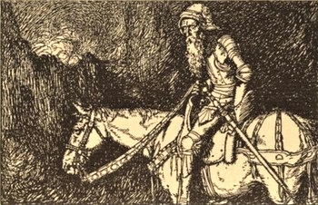
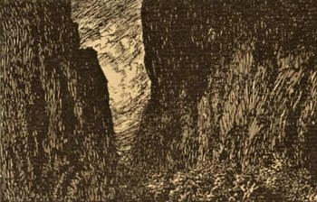
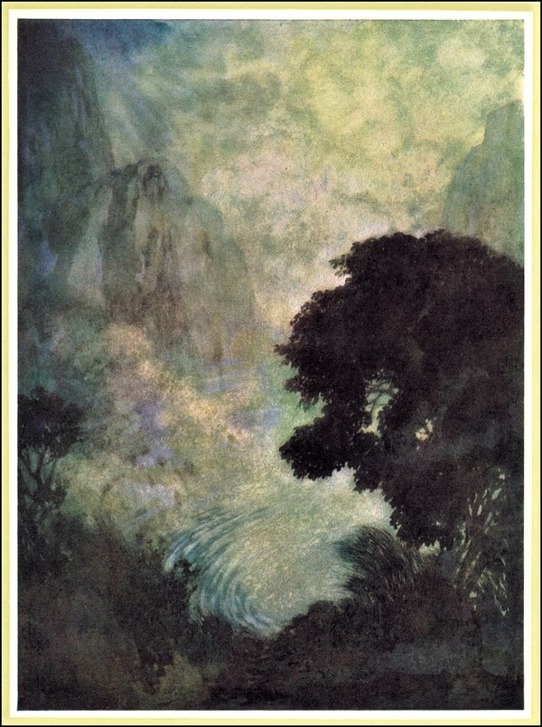
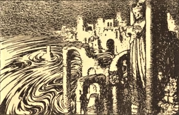
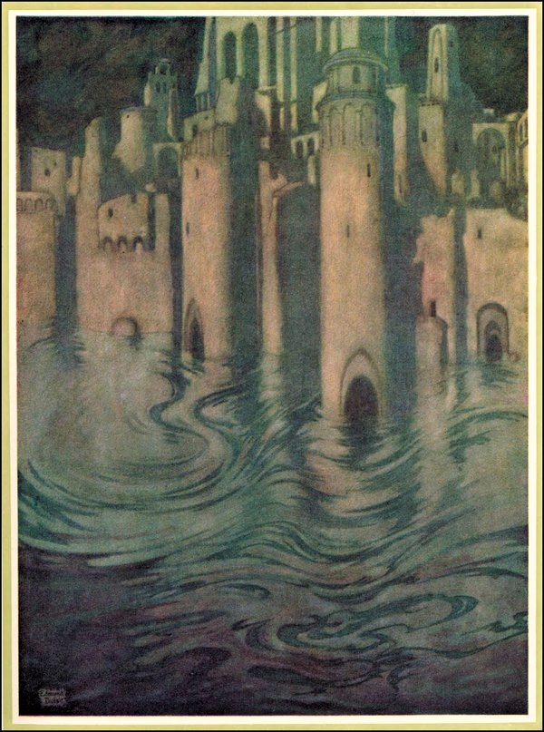
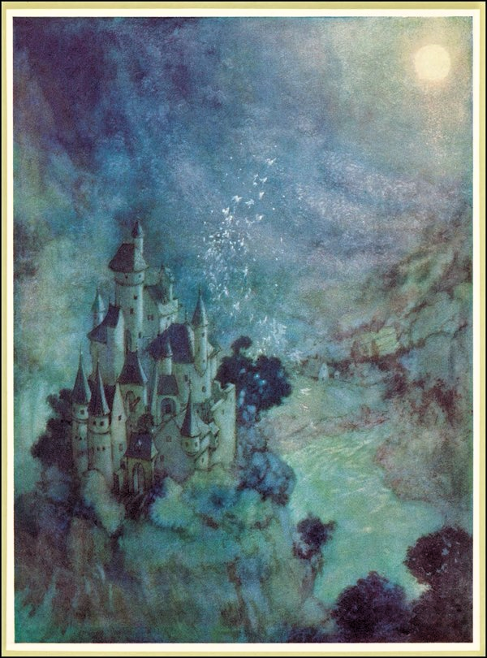
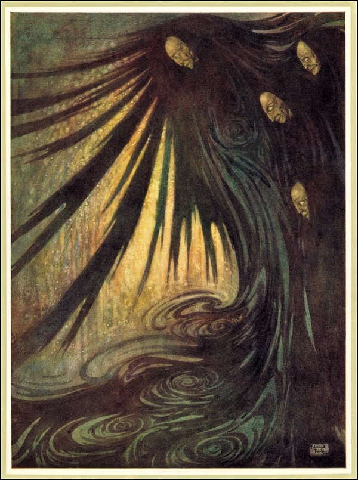
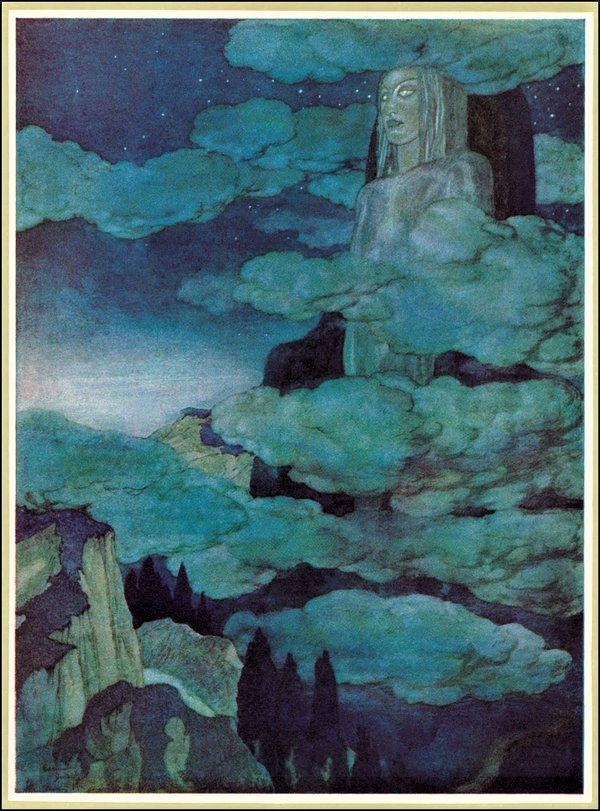
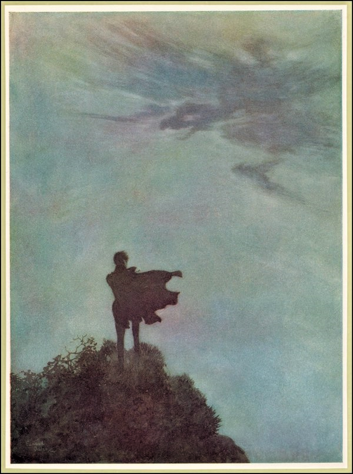

立派な装備で
勇ましい騎士が
日なたに陰に
長旅のさなか
歌いながら
黄金郷を探しゆく。
ところが年老け――
武者たるこの騎士といえど――
やがて心に影が
射す、どうにも
見当たらぬからだ、
黄金郷なる土地などは。
そして力も
とうとう尽きたとき
ふと出くわす、さすらう影――
「影よ」と問う
「どこにあるというのか――
この黄金郷なる地は？」
「月詠の
山々を越えて
影の谷をくだり
がむしゃらに駆けるのだ」
とその影は返す――
「黄金郷を探すというなら！」


むかし晴々と静かな小谷があった
そこに人の住まうことはなし
みな信じて戦に出向いたのだ
穏やかな目をした星々が
夜ごと居並ぶ空色の物見から
花畑を下に見守ってくれると
あいだに日がな赤の陽射しも
だらりと寝そべっていると。
いまは訪う者みな口にする
その哀しみの谷では不安になると。
何もかもが落ち着かない
なのにその地の雰囲気だけ
妙に静けさをたたえている。
ああ木をそよがせる風もないのに
木はわななく、霧の群島を
取り巻く凍える海のように！
ああ雲を流す風もないのに
雲はたなびく、不穏な天空を
そわそわと、
下には一面の菫が広がり
さまざまな人の
下では一面の百合がゆれ
名もなき墓の並ぶさなか滴っている！
一面ゆれて――そのかぐわしい葉先から
とこしえの雫が露と落ちる。
一面滴り――その華奢な茎から
絶え間ない涙が珠とこぼれる。


見よ！ 死の佇んでいる玉座を
そこは人知れぬひそやかな都市
霞なる西方の深い窪地にあり
善人悪人聖人極悪人みな
永遠の眠りについている。
その地の神殿宮殿そして塔は
（時に蝕まれながら揺るぎない塔！）
われらの知る何とも似ていない。
めぐりには、
なすすべなく空のもと
悒々たる水面が広がっている。
清らかな天空から射す光もなく
その街は長らく夜の時のまま、
されど海の蛍が灯りとなり
そこここの円塔をそっと照らし上げる――
ほのかな灯が頂塔へとふうわっと
円蓋へと――尖塔へと――王の
寺院へと――廃都然した城壁へと――
蔦の彫刻と石の花のある
久しく忘れられた影なす憩いの場へと――
そしてあまたの見事な神殿へと、
その小壁の花輪装飾に絡まるのは
月琴、菫、草の蔓。
なすすべなく空のもと
悒々たる水面が広がっている。
そこでは角櫓と影が溶け合い
何もかもが宙に浮かぶかのよう
かたや街に突き出た塔からは
死が巨人のごとく見下ろしている。
がらんの寺院と開け放しの墓地とが
明滅する波間にその口を覗かせる。
だがダイヤの目をした偶像など
豪奢なものはそこに見えぬ――
華やかな宝石まとう死人もまた
墓から波を招いたりせぬ、
なぜならさざ波では巻き込めぬ、ああ！
その硝子のごとき荒野には――
凹凸がないからわからない
はるかなる幸いの海の風のことも――
起伏もないから知りえない
なお恐ろしい静寂の海の風のことも。
だが見よ！ 空気の乱れを！
波だ――そこには動きがある！
あたかも塔がわずかに沈みながら
かき分け、ゆるい水流ができるかのよう――
さながら塔頂が天空の薄膜に
わずかな穴を作るかのごとく。
今や波間では灯もほのかに赤みがかり――
時もかすかに浅く息をしている――
そして地鳴りもなくこれから
下へ下へその街が落ちゆく定めでも
地獄はいずれ千の玉座から立ち上がり
その都に敬礼してみせよう。

仄暗い谷――影なす湖――
そして靄のかかったような森――
捉えがたいそのかたち、それも
あちこち露や雫にまみれているから。
大きな月が幾つもそこでは満ち欠け――
くり――かえし――くりかえし――
夜のひと刹那ごと――
とこしえに変転する地――
そこでは星影さえも消えてしまう
青白い顔した月たちの吐く息のために。
月時計にして十二のころ
他より
（畢竟するにそのひとつが
最適なものだとわかるのだが）
降りてくる――静かに――下へと
その中心を、突き出た山の
頂上に合わせながら、
さなか、その周辺が広く
ふわりゆるりと覆われていく
そこここの村落も丘々も
どこであろうと――
未踏の森も――水面も――
羽ばたいている精霊たちも――
まどろんでいるものたちもみな――
すっかり包み込まれてしまうのだ
光の迷宮のなかへと――
すると、何とも深く！ おお深く！
そのあふれる眠気へと。
あくる朝、みなが目覚めると
その月影の覆いは
天空へと浮かび上がり
勢い増してつむじ風も巻き起こる。
その月はもう二度と同じ
用途に使われることはない――
すなわち天幕には――
どうも途方もない大天幕だけれども。
ともあれ月から剥がれた粉が
雨のように降り注いでゆく
さながら月の欠片でできた蝶の群れ
地にあって天空に焦がれながら
またも降り落ちてゆき
（けして想いの叶わぬものたち！）
破片をひとつ運んでくる
その震える翼に乗せて。

この地の谷のいちばん緑深きところ
善き御使の棲まうあたりに
かつて美しくも堂々たる宮殿――
輝ける大屋敷――が聳えていた。
王の意のままなる所領のうちに――
座していた！
熾天使といえど翼をこの半ばも
美しい御殿に広げたことあるまいて！
旗が黄金色して眩いばかりに
頂きにて数々流れそよいでいた――
（これは――何もかも――古えの
はるか昔のこと）
穏やかな風が吹くたび絡み合う
あの愛おしい日に
羽飾り並ぶ色褪せた城壁沿いから
香気は翼生やして離れ去った。
かつてかの幸いの谷をわたる者らが
煌々たる窓二つから目にしたは
節に合わせて踊る精霊たち、
音色よき月琴の調べにて
ぐるり回るは玉座、そこにまします
紫の君、
誉れに違わぬ威容にて
この地の領主の姿あり。
至るところ真珠紅玉にきらめくは
美しき宮殿の大扉、
そこから抜けてするりするりするり
そしてどこまでもさざめき立つ
木霊の群れ、その楽しきつとめは
ただ歌うことのみ、
まさしく霊妙なる声にて
その王の才知を讃えたのだ。
ところが凶魔一群、哀しみの衣で、
領主の御所を攻めかかった。
（ああ悼もうぞ！――なぜなればもう
夜明けがお館様に来ることはなし、無残！）
かくしてかつてその館をつつみ
薔薇色に花栄えた誉れも
今はただおぼろげな昔話とて
埋もれ眠るだけ。
さて今日あの谷に立ち入る旅の者が
赫々たる窓二つから目にするは
狂いうごめく無数の大影、
外れ調子の旋律に乗りながら。
かたや騒霊じみた急流よろしく
光薄れた大扉を抜けて
おぞましき大群がとこしえに走り回り、
響く笑い声――だが笑顔はもうない。

靄かかる人気のない道を辿ると
病める天使のみ棲まうところあり
そこでは夜という名の幻影が
黒の玉座に鎮座まします。
その地に着いたのはつい先ごろ
仄暗い極北の地から――
聳え立つ奇怪の荒野から
宙の果て、時の果てから。
底なしの谷に果てのない湖海
そして深淵と洞窟と巨人の森、
人には捉えられぬそのかたち
それもあちこち露にまみれているから。
山裾はどこも急な崖で
岸辺もなく海へと突き入る、
海は落ちも着かずに高波なして
雷火の空にうねっている、
湖も終わりなく広げている
その何もない水面を――無に死に――
その動きない水面を――静に冷に
うなだれる純白の百合を一面に。
そう湖は終わりなく広げている
その何もない水面を、無に死に――
その動きない水面を、哀に冷に
うなだれる純白の百合を一面に――
そう山々――そばの川は
小声で囁き、延々とせせらぐ――
そう灰色の森――そばの湿地
ここでは蛙と蜥蜴が野生していて――
そう陰欝な湖沼には
食屍鬼が潜んでいる――
そう不浄きわまる各地――
そのそれぞれ陰り翳る隅では――
旅する者は驚懼とともに
包み隠されていた過去の記憶に
屍衣まとう姿形が急に
旅する者のそばを通り過ぎてゆく――
もう久しい友たちさえ白の衣
苦しみつつ土に――天に帰ったはずなのに。
その悲痛が群れなす胸中にあっては
ここは平穏で安らげる場所――
影のなかを歩む心にとっては
おお！ ここは黄金郷！
しかし旅人、ここを旅するだけでは
どうやら――まっすぐ見据えもできまいて。
けしてその謎あらわにはならぬぞ
閉ざされぬ弱き人の瞳には。
そう望んだのだ、その地の王は
下ろした瞼を上げてはいかんと。
だからこそここを通る哀れな魂は
闇という眼鏡なくてはそれが見えぬ。
靄かかる人気のない道を辿ると
病める天使のみ棲まうところあり
そこでは夜という名の幻影が
黒の玉座に鎮座まします。
あの仄暗い極北の地から。

幼少のころから
おれ――他人とは見えるもののちがっていた
おれ――そこいらのただの泉からは
このおれの想いはわいてこない――
同じ源からではこのおれの悲しみは
得られない――同じような音色では
このおれの心に喜びが芽生えたりしない――
そしてただ好き――おれひとり好きだったのは――
あのころの――幼いころの――まさに嵐の人生の
未明のころの――あらゆる善悪の彼岸から引き
出された、いまだおれを縛りつけるあの謎よ――
あの急流やあの水源からの――
あの山の赤肌の崖からの――
あの秋の黄金色に包みつつ
おれの周りをめぐった太陽からの――
舞うようにおれの前を過ぎていった
あの空のいなづまからの――
あの雷からあの嵐からの――
それこそあの雲がかたちを変えて
（青い空のそこだけが）
妖魔になったのを目のあたりにして――
